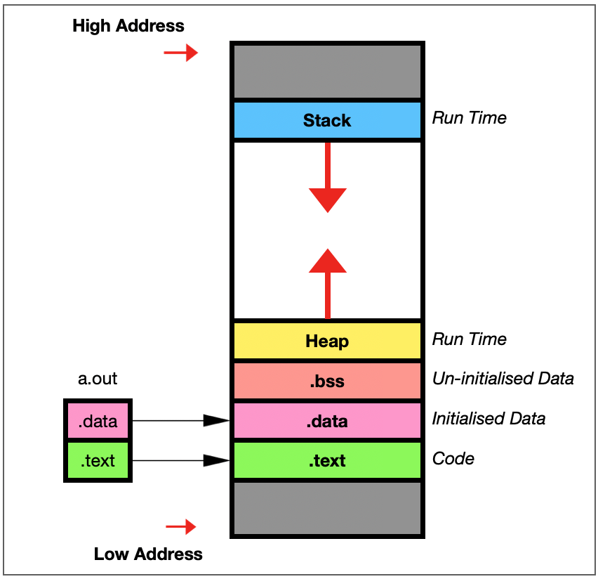
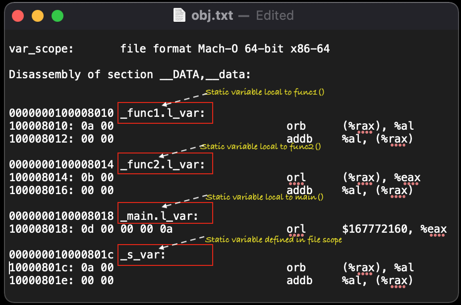

Static Variable¶
Static keyword is used as scope specifier in C/C++ programming. It makes scope limited to file scope or function scope. File scope if variable defined as global in file and function scope if variable is define locally to function.
In below mentioned code ‘s_var’ is defined as static at file level and ‘l_var’ is defined in multiple functions(func1, func2 and main).
Memory Management for C/C++ Programs¶
{kind=link}
In general
The initialized static variable is stored in the initialized data segment.
The uninitialized static variable is stored in the BSS segment.
Static variable(initialized to 0) is also stored in the BSS segment.
Compiler prepend function name to local static variable to distinguish static variables with same names in different functions.
Sample Code¶
/*************************************************************************************
Sample code fos Static Keyword
*************************************************************************************/
#include <stdio.h>
static int s_var = 10;
int func1(void){
static int l_var = 10;
return 0;
}
int func2(void){
static int l_var = 11;
return 0;
}
int main(void){
static int l_var = 13;
printf("s_var:%d, l_var:%d\n",s_var,l_var);
func1();
func2();
return 0;
}
Executable’s Objectdump¶
{kind=link}
Objdump utility is used to get contents of object file. In above image you can notice ‘l_var’ is prepended with _function name, this provides unique name to each local static variable and in case of two static variables with same name in two different function our code will compile.
Here we have used below command to get obj dump info
#objdump -D <file name>
For further info use “man objdump” to get more information on objdump utility.
{kind=link}